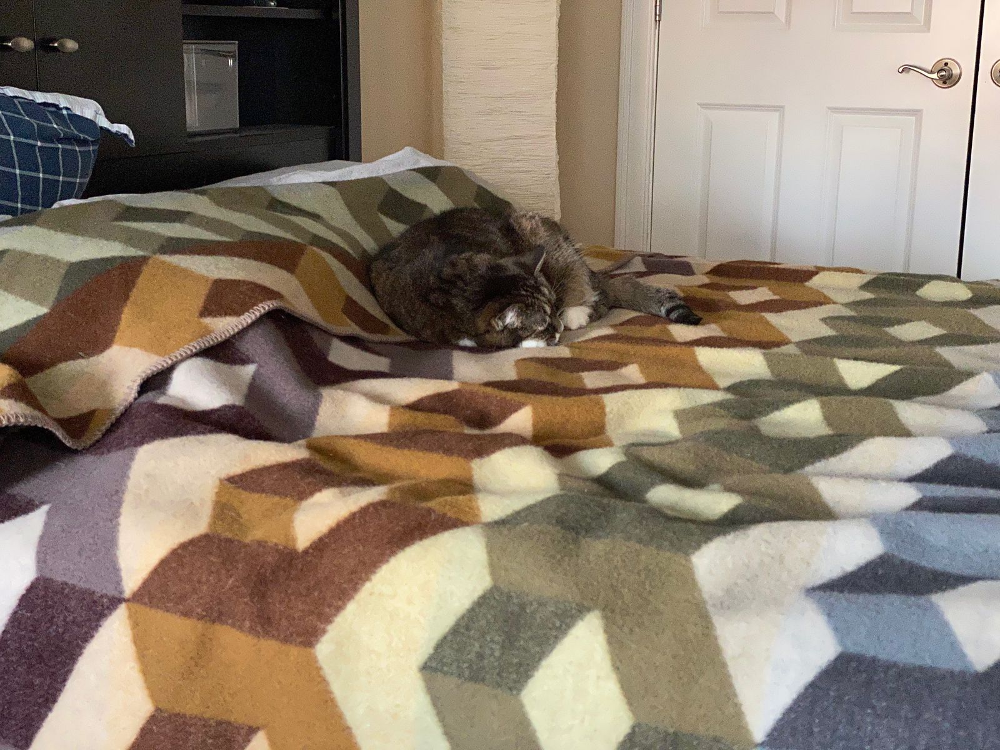
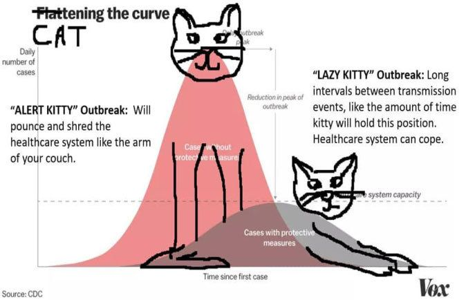

Pandemic from Home
Like many people working in tech, I am fortunate enough that much of my work can be done remotely (at least for the next month or so within my project's product development cycle). And I've asked my team to work from home as much as their job permits.
My reasoning is two-fold: first, there are many engineers on other teams whose work requires them to be at the office. We want to reduce the risk of exposure for them by keeping the office as empty as possible. Second, while most people on my team are young and in good health, several of them live with people who are not, so it is important to reduce their risk.

Public health is a very different beast from personal health in ways that are difficult for human brains to understand. Dealing with an epidemic is not (primarily) about not getting sick: it's about not spreading the infection. It's not only about personal hygiene and staying healthy, but also, arguably more so, about statistics and growth rates. Though, yes, wash your hands and don't touch your face. The difference between public health and personal health reminds me of the difference between climate change and weather change. Humans are horrible at understanding and responding to the former.
Things are about to get a lot worse before they get better. That much is clear based on the US response so far, especially at the federal level. Based on the news, people are panicked slightly more than they should be, or perhaps the right level of panic, but the prophylactic measures being applied currently are wildly insufficient.

If you are so fortunate to be able to do so, please work from home. Please limit travel. Please cancel plans to gather. It may sound silly or an overreaction, but isolating yourself as much as possible reduces the spread of the virus and reduces burdens on our healthcare system. It makes the world that much safer for those of us who cannot. It's not panicking; it's doing what we need to do so that we don't need to panic when things get worse.
All I maintain is that on this earth there are pestilences and there are victims, and it’s up to us, so far as possible, not to join forces with the pestilences
The Plague
For those of you expecting longer ramblings from me, I highly recommend the following reads:
- Charlie Warzel's NYT Opinion piece, which in part inspired this post.
- Tomas Pueyo's Coronovirus: Why You Must Act Now, a 25 minute long read, which soberly describes the reality we all face and the options in front of us as individuals and as a society. It has been making its round on the web over the past few days.
- Elizabeth Warren has a plan for that, coronavirus edition